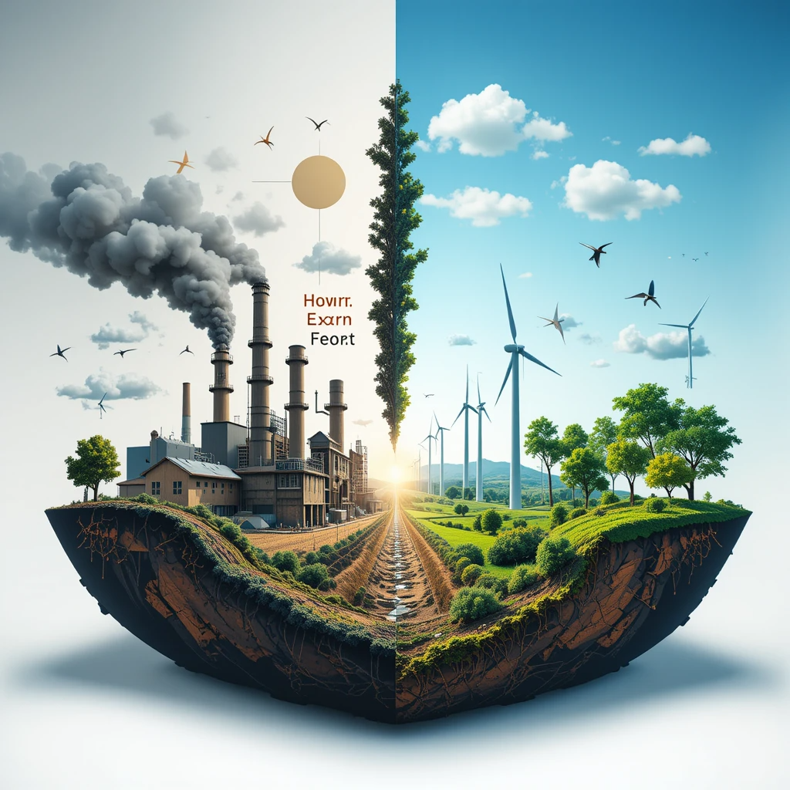

2.3. Comparación con el modelo clásico de producción frente al modelo sostenible
El modelo sostenible transforma la producción frente al enfoque lineal tradicional:

| Aspecto | Modelo Clásico (Lineal) | Modelo Sostenible (Verde/Circular) |
|---|---|---|
| Enfoque | Extraer, producir, usar, desechar. | Reducir, reutilizar, reciclar. |
| Diseño | Obsolescencia programada. | Modularidad, fácil reparación. |
| Consumo de recursos | Alto uso de materiales vírgenes. | Materiales reciclados, baja huella. |
| Residuos | 59.4 Mt de e-waste en 2022. | Reciclaje (ej., Dell: 95% componentes). |
| Ejemplo | Smartphones no reparables. | Fairphone, software abierto. |
Ventajas sostenibles: Menor huella de carbono, ahorro de recursos, nuevos modelos de negocio (leasing). Desafíos: Costos iniciales altos, resistencia al cambio.